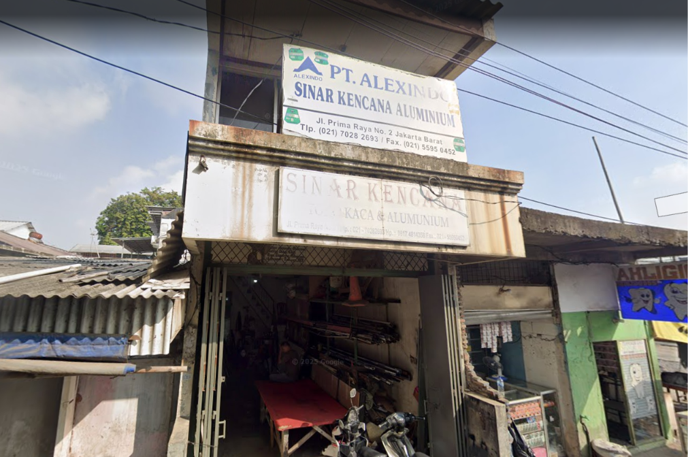

Sinar Kencana Toko Kaca & Alumunium (In Progress)

Freelance project for Sinar Kencana Toko Kaca & Aluminium: developing a responsive company profile website to strengthen the company's digital presence and showcase completed glass and aluminium projects. Currently designing the UI/UX and planning a Laravel-based admin dashboard with MySQL, allowing the client to update website content independently after deployment.
What U Need

Helped design the UI/UX and complete design system for What U Need, a friend's Gen Z streetwear brand — building the visual identity from scratch, including color palette, typography, and 3 core pages: Home, Product Listing, and Product Detail. The website's front-end development is planned as the next phase.
Story App

Built a Progressive Web App (PWA) for sharing stories with photos and interactive maps. Implemented camera integration, geolocation, offline support through Service Workers, responsive design, and dynamic story management using JavaScript, Webpack, and Leaflet.js.
Aqua App

Developing an Android application simulating a barcode-based loyalty and rewards program. Features include user authentication, camera-based barcode scanning for point collection, and identity verification before reward redemption.
SkincareKu

A group project for an Object-Oriented Analysis course, designing SkinCare'Ku — a website concept that detects facial skin problems via AI and recommends skincare products from local Indonesian brands. As UI/UX Designer, built interactive Figma prototypes and produced system diagrams (use case, activity, sequence) to document the application's logic.